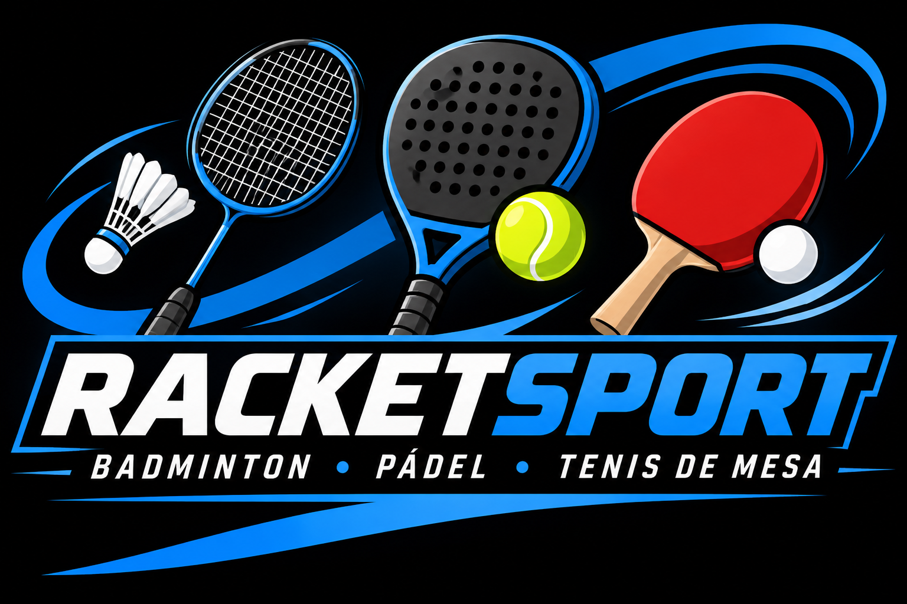
En RacketSport somos una empresa dedicada a organizar y ofrecer actividades de ocio y tiempo libre orientadas a los deportes de raqueta. Nuestro objetivo es crear un espacio dinámico para todos los niveles: impartimos clases especializadas para quienes buscan aprender o perfeccionar su técnica de la mano de profesionales, y también ofrecemos la posibilidad de venir por libre alquilando nuestras pistas por horas para disfrutar de un partido al aire libre o en nuestras instalaciones con total libertad y flexibilidad.
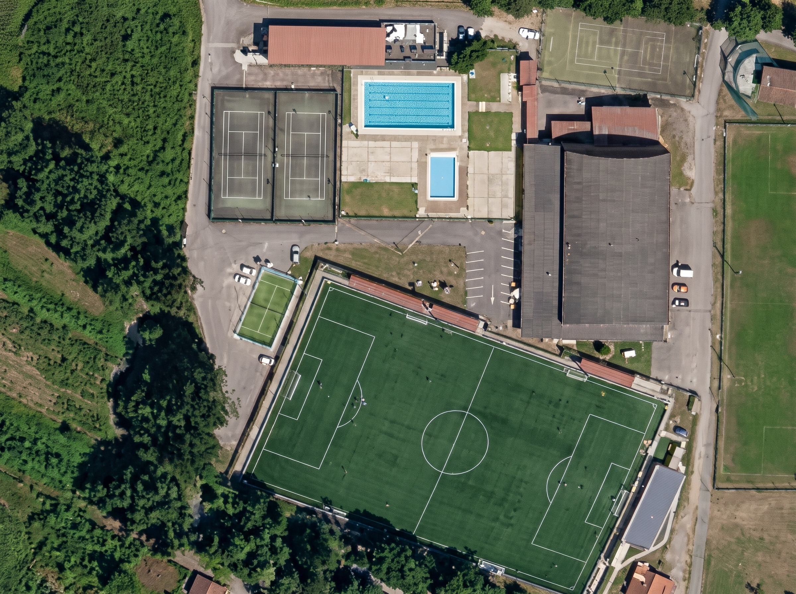
Nos encontramos en el polidepotivo de agones, pravia donde tenemos la pista de padel fuera y la pista de tenis de mesa y bádminton dentro del polideportivo. Para utilizar nuestras pistas nos puedes mandar tu informacion en el formulario de abjo del todo o en el mismo sitio de las pistas puedes alquilar la pista si hay horas libres.
El bádminton es un deporte de raqueta dinámico e intenso que se juega individualmente o en parejas en una pista dividida por una red, con la particularidad de que no utiliza pelota sino un volante o plumilla que debe ser golpeado antes de que toque el suelo. Destaca por su ritmo vertiginoso y la rapidez de sus intercambios, exigiendo a los jugadores un alto nivel de agilidad, reflejos, coordinación y resistencia física para desplazar al rival en partidos disputados habitualmente al mejor de tres sets de 21 puntos.
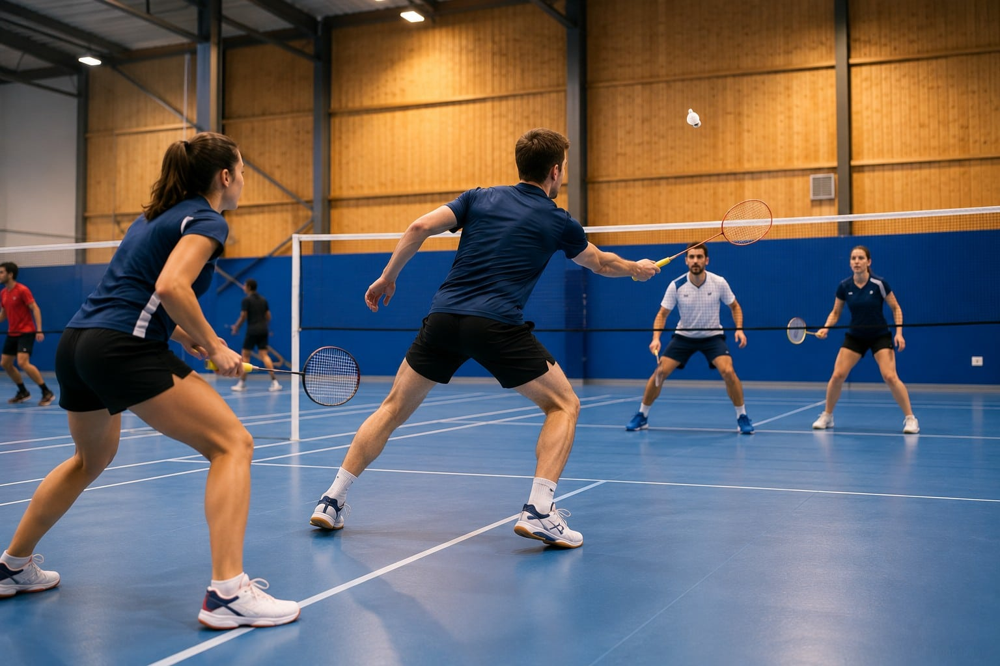
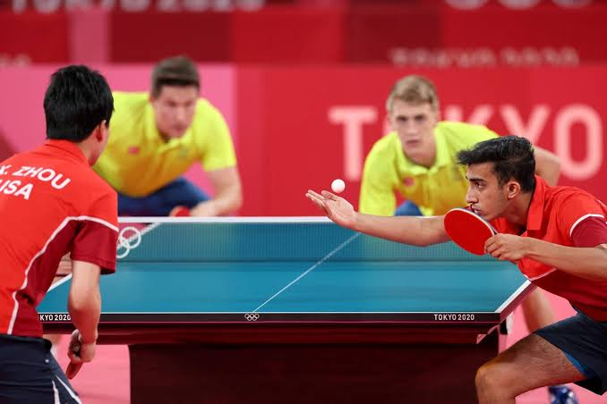
El tenis de mesa es un deporte de raqueta rápido y de alta precisión que se juega sobre una mesa rígida dividida por una red, de forma individual o en parejas. El objetivo consiste en golpear una pelota ligera de celuloide o plástico con una pala pequeña para que bote en el campo contrario, buscando que el rival no pueda devolverla. Sobresale por la enorme velocidad de reacción que exige a los jugadores y por la importancia de los efectos (spin) impartidos a la pelota, requiriendo un control técnico excepcional, concentración constante y agilidad táctica en partidos que se disputan habitualmente al mejor de varios sets alcanzados a los 11 puntos.
El pádel es un deporte de raqueta muy dinámico y social que se juega siempre en parejas sobre una pista rectangular cerrada por paredes o cristales y dividida por una red. Su principal rasgo distintivo es que las paredes forman parte activa del juego, permitiendo que la pelota rebote en ellas para mantener la bola en movimiento y generar puntos más largos y estratégicos. Se disputa con una pala rígida y perforada junto a una pelota similar a la de tenis pero con menor presión, requiriendo buena coordinación, compenetración en equipo y colocación táctica por encima de la fuerza bruta, en partidos organizados bajo un sistema de puntuación idéntico al del tenis (juegos, sets y tie-breaks).
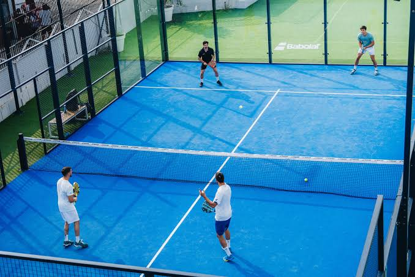
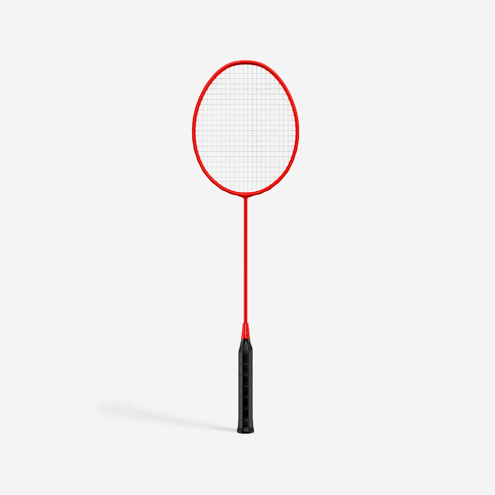
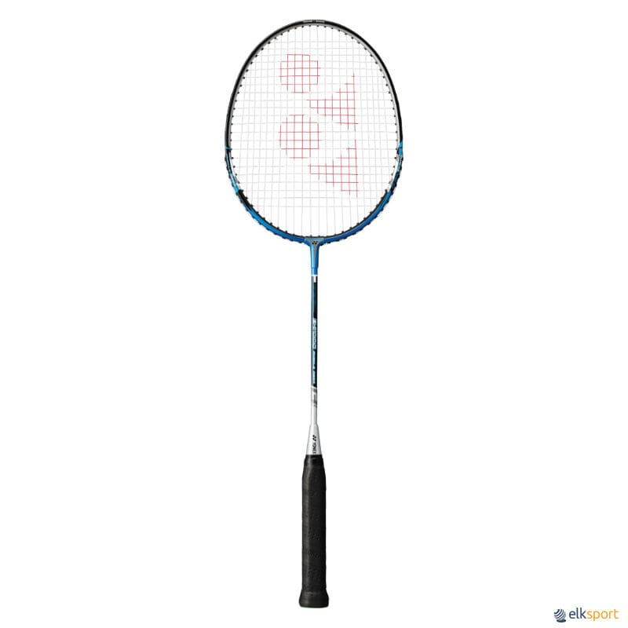
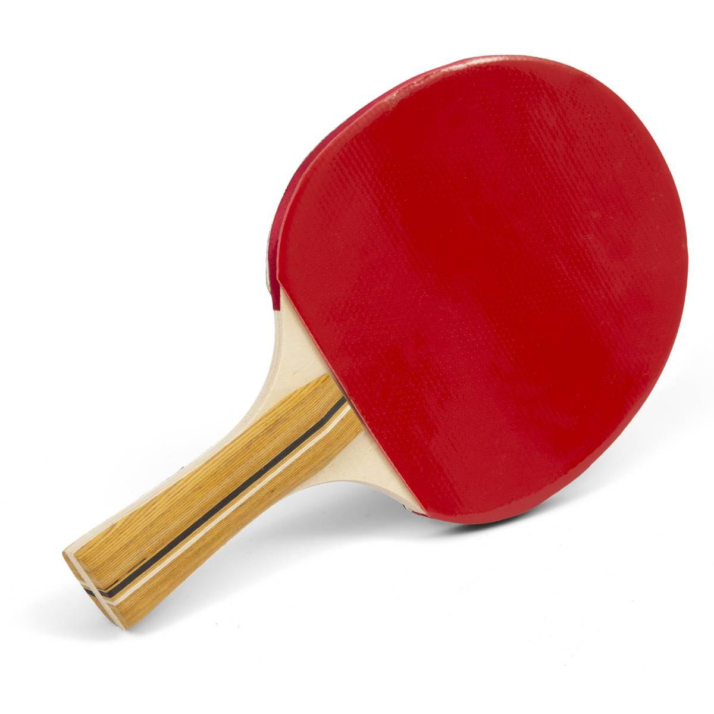
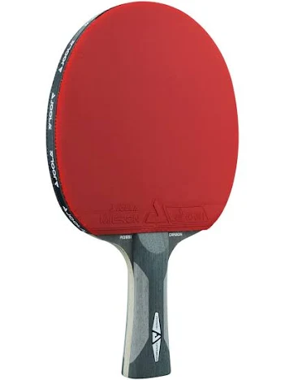
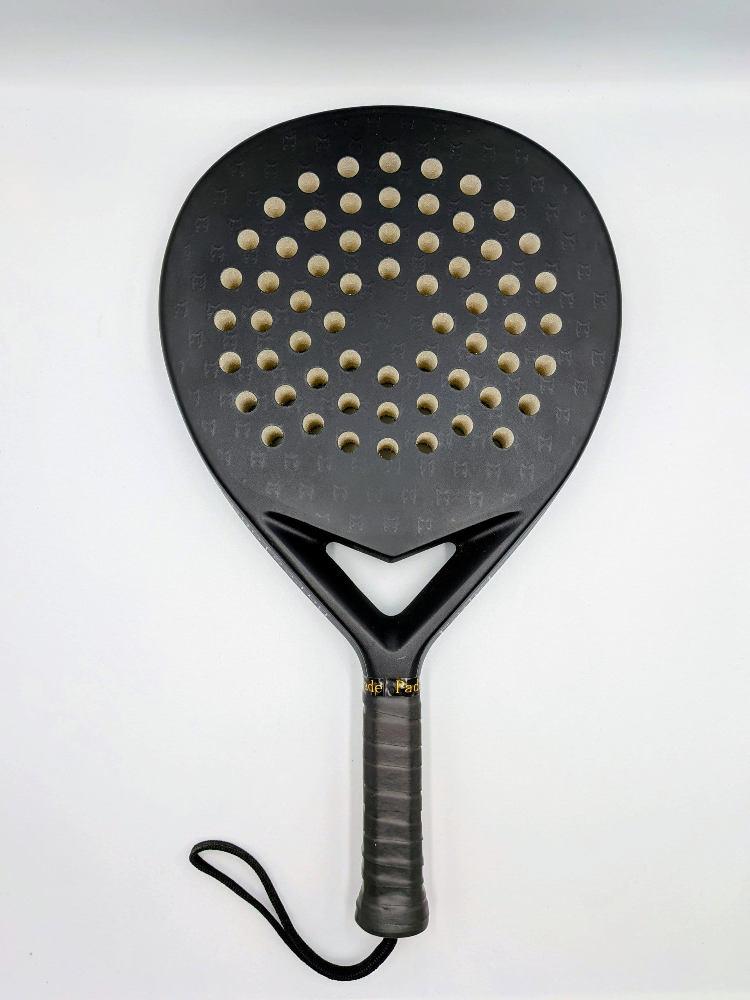
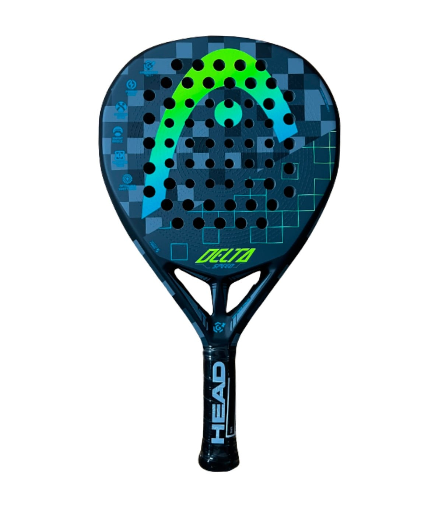